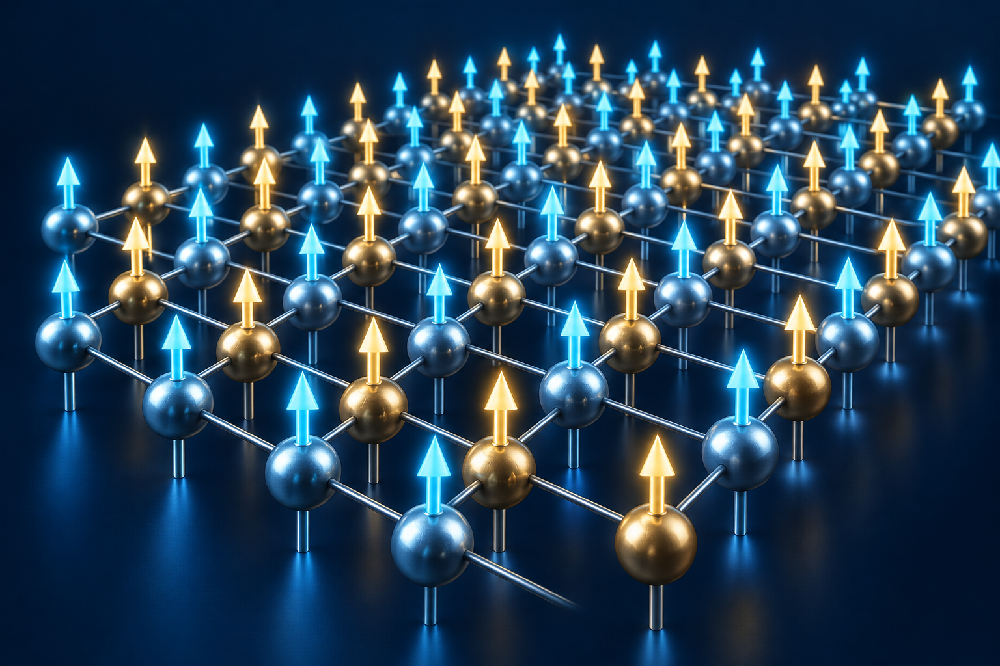
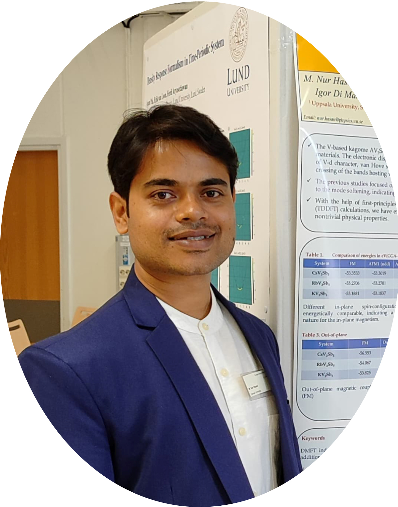

MAGNETIC ORDER
Small moments.
Collective possibilities.
Magnetism emerges when microscopic moments interact. Understanding those interactions opens a route to designing better materials.
COMPUTATIONAL MATERIALS PHYSICIST
I’m Dr. M. Nur Hasan. I connect electronic structure to magnetic behaviour through first-principles theory and multiscale modelling.

Postdoctoral Researcher · Uppsala University
Materials Theory · EU Horizon Europe MaMMoS
Conceptual science illustrations · Original physics reflections
Research across scales.
Publication metrics as reported in my CV.
THE PHYSICIST BEHIND THE CALCULATIONS
I study how electronic structure shapes the magnetic properties of materials, and how those microscopic insights can guide materials design.
My research combines first-principles electronic-structure theory, computational magnetism and multiscale modelling. At Uppsala University, I work within the EU Horizon Europe MaMMoS project on rare-earth-free permanent magnets and magnetic intermetallic compounds.
Earlier, my doctoral research at the S. N. Bose National Centre for Basic Sciences explored correlated quantum materials, kagome metals, van der Waals magnets and spintronic systems. My wider collaborations also connect computational methods with spectroscopy, nanomaterials and energy-related applications.
I value close interaction between theory, computation and experiment, and welcome collaborations on fundamental and applied questions in magnetism and quantum materials.
01 / RESEARCH
My work brings together electronic-structure theory, computational magnetism and finite-temperature modelling to understand and design magnetic materials.
First-principles and multiscale design of Y–Fe-based magnets, exploring chemical substitution, disorder, magnetic anisotropy and finite-temperature performance within MaMMoS.
Electronic correlations, spin reorientation and spin–phonon coupling in low-dimensional systems, including Fe₄GeTe₂ and 1T-CrS₂.
Interfacial Dzyaloshinskii–Moriya interactions and spin–orbit-driven phenomena in transition-metal dichalcogenide/ferromagnet heterostructures.
Correlation-driven magnetism, magnetic fluctuations and complex spin textures in kagome AV₃Sb₅ materials, where A = K, Rb or Cs.
Checking ORCID and Crossref for new journal articles…
CV bibliography, supplemented by journal articles linked to ORCID 0000-0001-7826-5613. New records refresh automatically on visits. Citation metrics above are the figures in my CV.
R. Pal, M. N. Hasan, D. Das, C. Nayak, M. Deka, N. Salehi, M. Pereiro, S. Mondal, A. Misra, A. Singha, P. Mandal, D. Karmakar, & A. N. Pal
S. Pal, M. N. Hasan, H. Bangar, N. Salehi, S. Mathur, M. Pereiro, P. Thunström, P. K. Muduli, D. Karmakar, & A. Barman
M. N. Hasan, N. Salehi, F. Sorgenfrei, A. Delin, I. Di Marco, A. Bergman, M. Pereiro, P. Thunström, O. Eriksson, & D. Karmakar
D. Mitra, M. N. Hasan, C. C. Gowda, G. Costin, C. S. Tiwary, D. Karmakar, & P. K. Datta
B. Kundu, P. Mondal, D. Tebbe, M. N. Hasan, S. Chakraborty, M. Metzelaars, P. Kögerler, D. Karmakar, G. Pradhan, C. Stampfer, B. Beschoten, L. Waldecker, P.K. Sahoo
S. Mukherjee, G. Samanta, M. N. Hasan, S. Moulick, R. Kulkarni, K. Watanabe, T. Taniguchi, A. Thamizhavel, D. Karmakar, & A. N. Pal
R. Ghosh, L. Roy, D. Mukherjee, S. Sarker, J. Mondal, N. Pan, M. N. Hasan, S. Ghosh, Arpita Chattopadhyay, A. Adhikary, M. B. Bhattacharyya, Asim K. Mallick, Ranjit Biswas, Ranjan Das, & Samir Kumar Pal
L. Roy, N. Pan, R. Ghosh, M. N. Hasan, S. Mondal, A. Banerjee, M. Das, O. Sen, K. Bhattacharya, Arpita Chattopadhyay & S. K. Pal
N. Pan, M. N. Hasan, S. Ghosh, L. Roy, C. Bhattacharya, D. Karmakar, & S. K. Pal
G. Ghosh, R. Ghosh, D. Mukherjee, M. N. Hasan, N. Pan, L. Roy, S. Biswas, R. Das & S. K. Pal
L. Roy, N. Pan, S. Mondal, R. Ghosh, M. N. Hasan, N. Bhattacharyya, S. Singh, K. Bhattacharyya, A. Chattopadhyay, & S. K. Pal
M. N. Hasan, R. Bharati, J. Hellsvik, A. Delin, S. K. Pal, A. Bergman, S. Sharma, I. Di Marco, M. Pereiro, P. Thunström, P. M. Oppeneer, O. Eriksson, & D. Karmakar
D. Karmakar, M. Pereiro, M. N. Hasan, R. Bharati, J. Hellsvik, A. Delin, S. K. Pal, A. Bergman, S. Sharma, I. Di Marco, P. Thunström, P. M. Oppeneer, & O. Eriksson
N. C. Maurya, R. K. Yadav, A. Mondal, R. Karmakar, S. K. Bera, P. Taank, D. Mandal, M. Shrivastava, M. N. Hasan, T. K. Maji, D. Karmakar, & K. V. Adarsh
R. Ghosh, D. Mukherjee, G. Ghosh, M. N. Hasan, A. Chattopadhyay, R. Das, & S. K. Pal
N. Pan, L. Roy, M. N. Hasan, A. Banerjee, R. Ghosh, M. A. Alsharif, B. A. Asghar, R. J. Obaid, A. Chattopadhyay, R. Das, S. A. Ahmed, & S. K. Pal
M. N. Hasan, F. Sorgenfrei, N. Pan, D. Phuyal, M. Abdel-Hafiez, S. K. Pal, A. Delin, P. Thunstrom, D. D. Sarma, O. Eriksson, & D. Karmakar
M. N. Hasan, A. Bera, T. K. Maji, D. Mukherjee, N. Pan, D. Karmakar, & S. K. Pal
N. Pan, S. Ghosh, M. N. Hasan, S. A. Ahmed, A. Chatterjee, J. Patwari, C. Bhattacharya, J. Qurban, A. Khder, & S. K. Pal
A. Bera, M. N. Hasan, N. Pan, R. Ghosh, R. Alsantali, H. M. Altass, R J. Obaid, S. A. Ahmed, & S. K. Pal
D. Mukherjee, G. Chakraborty, M. N. Hasan, U. Pal, P. Singh, T. Rakshit, R. I. Alsantali, T. Saha-dasgupta, S. A. Ahmed, R. Das, & S. K. Pal
S. A. Ahmed, M. N. Hasan, H. M. Altass, A. Bera, R. I. Alsantali, N. Pan, A. Y. A. Alzahrani, D. Bagchi, J. H. Al-Fahemi, A. S. Khder, & S. K. Pal
A. Banerjee, S. Singh, R. Ghosh, M. N. Hasan, A. Bera, L. Roy, N. Bhattacharya, A. Halder, A. Chattopadhyay, S. Mukhopadhyay, A. Das, H. M. Altass, Z. Moussa, S. A. Ahmed, & S. K. Pal
D. Mukherjee, M. N. Hasan, R. Ghosh, G. Ghosh, A. Bera, E. S. Prasad, A. Hiwale, P. Vemula, R. Das, & S. K. Pal
A. Bera, M. N. Hasan, A. Chatterjee, D. Mukherjee, & S. K. Pal
A. Bera, M. N. Hasan, U. Pal, D. Bagchi, T. K. Maji, T. Saha-Dasgupta, R. Das, & S. K. Pal
M. N. Hasan, A. Bera, T. K. Maji, & S. K. Pal
D. Mukherjee, D. Paul, S. Sarker, M. N. Hasan, R. Ghosh, S. Prasad, P. Vemula, R. Das, A. Adhikary, S. K. Pal, & T. Rakshit
S. A. Ahmed, M. N. Hasan, D. Bagchi, H. A. Altass, M. Morad, R. S. Jassas, A. M. Hameed, J. Patwari, H. Alessa, A. Alharbi, Ahmed, & S. K. Pal
S. A. Ahmed, M. N. Hasan, D. Bagchi, H. M. Altass, M. Morad, I. I. Althagafi, A. M. Hameed, A. Sayqal, A. S. Khder, B. H. Asghar, H. A. Katouah, & S. K. Pal
M. N. Hasan, T. K. Maji, U. Pal, A. Bera, D. Bagchi, A. Halder, S. A. Ahmed, J. H. Al-Fahemi, T. M. Bawazeer, T. Saha-Dasgupta, & S. K. Pal
T. K. Maji, M. N. Hasan, S. Ghosh, D. Wulferding, C. Bhattacharya, P. Lemmens, D. Karmakar, & S. K. Pal
S. A. Ahmed, D. Bagchi, H. A. Katouah, M. N. Hasan, H. M. Altass, & S. K. Pal
03 / EXPERIENCE & EDUCATION
Materials Theory, Department of Physics and Astronomy. First-principles modelling, atomistic spin dynamics with UppASD, high-throughput screening and machine-learning model validation within the MaMMoS project.
Correlated and magnetic quantum materials, kagome metals and spintronic systems. Ph.D. in Physics awarded by the University of Calcutta in December 2023.
West Bengal Council of Higher Secondary Education.
04 / METHODS & TOOLS
From electronic bands to finite-temperature spin dynamics, supported by reproducible workflows and large-scale computing.
Chemical disorder and SQS · Structural optimization · Phonons · Vibrational free energies · Phase stability · Machine-learning interatomic potentials · High-throughput calculations
DFT · DFT+U · DFT+DMFT · Electronic bands · Density of states · Fermi surfaces · Spin–orbit coupling · Exchange interactions · Dzyaloshinskii–Moriya interaction · Anisotropic exchange · Magnetocrystalline anisotropy · Monte Carlo · Atomistic spin dynamics · Chiral spin textures
VASP · RSPt · UppASD · ATAT · Phonopy · MatterSim · Wannier90 · WannierTools · WannierBerri · ASE · IFermi · PyProcar · FermiSurfer · VESTA · XCrySDen
Python · Bash · SLURM · MPI · Workflow automation
Dardel · Tetralith · LUMI · Pelle/UPPMAX · Arrhenius
05 / SCIENTIFIC COMMUNITY
Co-organizer, European School on Magnetism 2026, Uppsala. Co-organizer and oral presenter at DQMMA 2023, the first Indo–Swedish Meeting on Divergent Quantum Materials, Methods and Applications.
UPPMAX · 2026
Computational resources awarded through an independently submitted proposal for first-principles and computational-magnetism simulations.
NAISS / Arrhenius · 2026
Computational resources awarded through an independently submitted proposal for large-scale electronic-structure and magnetic-materials simulations.
06 / COLLABORATIONS
I work at the intersection of theory, computation and experiment, with scientific partnerships across Europe and India.
Uppsala UniversityUppsala, Sweden
IFW DresdenDresden, Germany
University for Continuing Education KremsKrems, Austria
Max Planck Institute for the Structure and Dynamics of MatterHamburg, Germany
S. N. Bose National Centre for Basic SciencesKolkata, India
Bhabha Atomic Research CentreMumbai, India
07 / TALKS & CONFERENCES
Presentations and scientific exchanges, from focused workshops to international meetings.
Oral presentation
Oral presentation
Poster
Poster
Poster
Poster
Oral presentation
Oral presentation & co-organization
Oral presentation
Oral presentation
Oral presentation & poster
Best Poster Award
Participant
Poster
Poster
Oral presentation
Poster
08 / AWARDS & FELLOWSHIPS
CSIR Senior Research Fellowship · 2020–2023
CSIR Junior Research Fellowship · 2018–2020
CSIR-NET Junior Research Fellowship · 2017
SERB International Travel Grant · 2022, for Psi-k at EPFL, Switzerland
CSIR Foreign Travel Grant · 2022
JEST · 2018
GATE, Physics · 2017 & 2018
IIT-JAM, Physics · 2015
Merit-cum-Means Scholarship · 2012–2015
State-level scholarships · Classes VIII, X & XII
English · Speaking, reading and writing
Bengali · Mother tongue
Hindi · Working proficiency in speaking and reading
Scientific literature, history, cricket, table tennis, music and academic lectures.
LET’S CONNECT
Materials Theory
Department of Physics and Astronomy
Uppsala University
Box 516, 751 20 Uppsala, Sweden
+46 73 489 08 14
Academic references available on request.